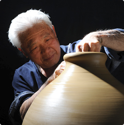

南蠻粗燒起源於南蠻甕。是15～16世紀琉毬王國展開海外大貿易的時代從東南亞傳來的。
其特點是不使用釉料用高溫燒製而成，自古作為泡盛酒的貯藏容器和古酒釀造容器而被使用。

粗燒指的是不使用釉藥上色，保持了土陶本色的高溫燒製而成的陶器。自古被認為最適合用作泡盛酒的熟成。粗燒土陶中含有的鐵份等金屬成份融入缸裡發生催化作用而加速泡盛的熟成。
本公司著眼於這一特點，本著「精益求精釀造最佳泡盛酒、最佳古酒」的基本理念，在沖繩縣泡盛行業中率先開始了泡盛熟成容器－酒甕的製造。第一代公司董事長大城繁先生親自轉動陶輪研究製陶，從而開創了業內首個自家陶窯製造的「忠孝南蠻粗燒酒甕」。

酒甕斷片
使用質地細膩的泥土高溫燒製、因此密度極高。敲打時發出金屬般的聲音。
日本的備前燒的收縮率為20%、而忠孝南蠻粗燒酒甕的收縮率約為45%。
因此我們充滿自信地保證絕不漏水是最適合用來熟成的酒甕。
※請把斷片拿在手裡確認一下。